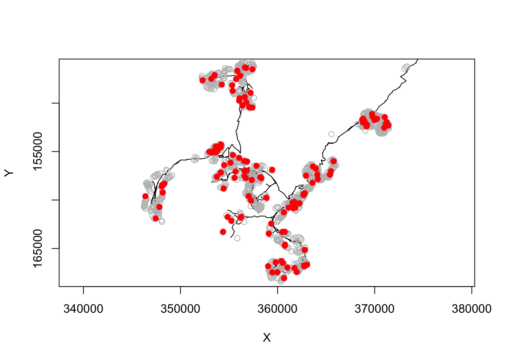

vignettes/selecting_random_synapses.Rmd
selecting_random_synapses.RmdYou can select synapses within a spatial region and then carrying out a random sub-sampling. This might be useful as part of a strategy for defining connectivity without reconstructing all connections.
First load main packages
## Loading required package: catmaid## Loading required package: httr## Loading required package: nat## Loading required package: rgl## Registered S3 method overwritten by 'nat':
## method from
## as.mesh3d.ashape3d rgl##
## Attaching package: 'nat'## The following object is masked from 'package:rgl':
##
## wire3d## The following objects are masked from 'package:base':
##
## intersect, setdiff, union## Loading required package: nat.flybrains## Loading required package: nat.templatebrains## Loading required package: nat.nblast## Registered S3 methods overwritten by 'elmr':
## method from
## plot3d.ngraph nat
## xformpoints.tpsreg nat##
## Attaching package: 'elmr'## The following objects are masked from 'package:nat':
##
## distal_to, prune_twigs, simplify_neuron, stitch_neuron,
## stitch_neurons, tpsregIn order to run some of the examples we need to ensure that we:
We will most our examples run conditionally based on this.
We’re going to look at synapses downstream of DA1 PNs
If we wanted to get the upstream synapses, we could do that as follows:
We then want to select synapses within a neuropil region, the lateral horn. The elmr package now has a neuropil surface object FAFBNP13.surf that we can use for this purpose. To look for points inside the right LH, we can extract just that region from the surface object containing all neuropils as follows:
Now we can select just those synapses within the LH volume, by piping the XYZ positions of the presynaptic connector node to the pointsinside function.
##
## Attaching package: 'dplyr'## The following objects are masked from 'package:nat':
##
## intersect, setdiff, union## The following objects are masked from 'package:stats':
##
## filter, lag## The following objects are masked from 'package:base':
##
## intersect, setdiff, setequal, union# make a new logical column indicating if connector is inside LH
cda1$inlh=select(cda1, connector_x:connector_z) %>%
pointsinside(surf = lhr)
cda1 %>%
filter(inlh) ->
cda1.lhNow let’s take a random 10% sample of the post-synaptic connector nodes for just one PN:
We can then construct CATMAID URLs for all those synapses:
synapse_urls=sapply(1:nrow(random_syn),
function(i) open_fafb(random_syn[i, c("post_node_x", "post_node_y", "post_node_z")],
active_skeleton_id = random_syn$post_skid[i],
active_node_id = random_syn$post_node_id[i], open = F)
)That was a little bit clunky but we basically feed the open_fafb function the data one row at a time centering the URL on the postsynaptic node and selecting that node in the CATMAID viewer.
So here are the results
## [1] "https://neuropil.janelia.org/tracing/fafb/v14/?pid=1&zp=149080&yp=149608&xp=356345&tool=tracingtool&sid0=5&s0=1.000000&active_skeleton_id=486038&active_node_id=2571201"
## [2] "https://neuropil.janelia.org/tracing/fafb/v14/?pid=1&zp=155400&yp=160846&xp=347527&tool=tracingtool&sid0=5&s0=1.000000&active_skeleton_id=485695&active_node_id=2570838"
## [3] "https://neuropil.janelia.org/tracing/fafb/v14/?pid=1&zp=157520&yp=167403&xp=359251&tool=tracingtool&sid0=5&s0=1.000000&active_skeleton_id=497612&active_node_id=2596331"
## [4] "https://neuropil.janelia.org/tracing/fafb/v14/?pid=1&zp=154680&yp=159927&xp=362509&tool=tracingtool&sid0=5&s0=1.000000&active_skeleton_id=1853423&active_node_id=6628803"
## [5] "https://neuropil.janelia.org/tracing/fafb/v14/?pid=1&zp=158640&yp=166721&xp=359176&tool=tracingtool&sid0=5&s0=1.000000&active_skeleton_id=498276&active_node_id=2597535"
## [6] "https://neuropil.janelia.org/tracing/fafb/v14/?pid=1&zp=155400&yp=161400&xp=347317&tool=tracingtool&sid0=5&s0=1.000000&active_skeleton_id=1897430&active_node_id=6732642"Let’s make a plot to get an idea of where those synapses are: First fetch the full structure of the seed PN
Now plot the selected and unselected synapses
# find bounding box containing selected synapses
synapse_bounds=apply(random_syn[,c("post_node_x", "post_node_y", "post_node_z")],2,range)
plot(seedpn, WithNodes=F, boundingbox=synapse_bounds)
# plot the synapses we didn't select
cda1.lh %>%
filter(!post_node_id %in% random_syn$post_node_id & pre_skid %in% random_syn$pre_skid) %>%
select(post_node_x:post_node_y) %>%
points(col='grey')
# and then the ones we did
points(random_syn$post_node_x, random_syn$post_node_y, col='red', pch=19)
Then you can open those urls directly in CATMAID:
for (u in synapse_urls) {
readline("Press a key to move to open the next synapse (or Esc to cancel).")
browseURL(u)
}or write them to a text file
or upload them to a google doc